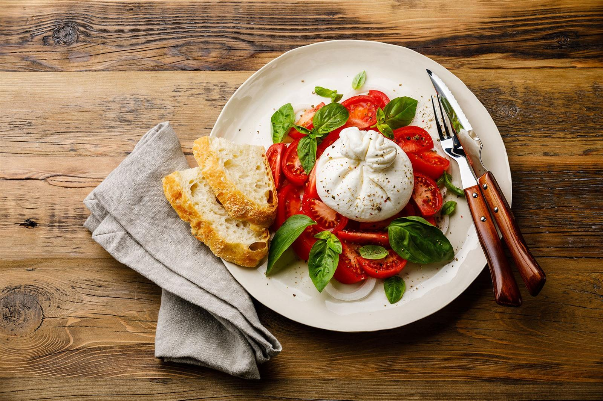
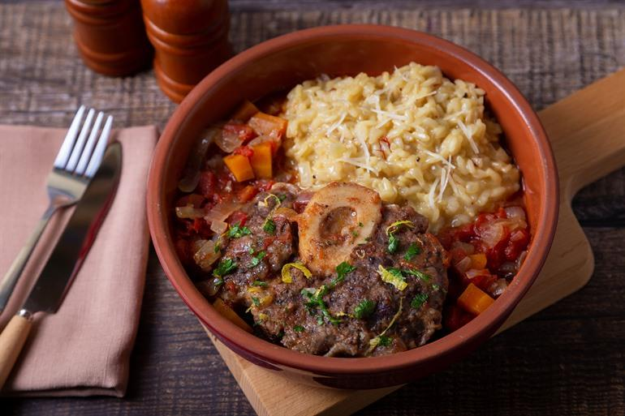

Appetizers
Buratta, a delicasy from Puglia. This cheese is made from buffalomozarella and cream and will be served with basil, tomatoes and bread.
Cicchetti, most common in Venetia. This are small delicous snacks on sliced baguettes. This appetizer can be well combined with wine.
Focaccia alla Genovese, most commonly found in Genua along the Riviera. This is the best focaccia worldwide because of the high quality olive oil and the combination of grains
Main dishes
Melanzane alla Parmigiana, a recipe made from thin eggplant slices and tomatoes topped with a crispy layer of parmezan cheese. Delicious to comibine with wine

Ossobuco Milanese, is a delicious recipe. As the name says it most commonly made in Milan. This speciality is veal shank that is cooked in white wine. Served with risotto or pasta.
The Montara Pizza is a quite special pizza. This pizza is made in a frying pan after that it also put into the oven the result is a unique and delicious pizza